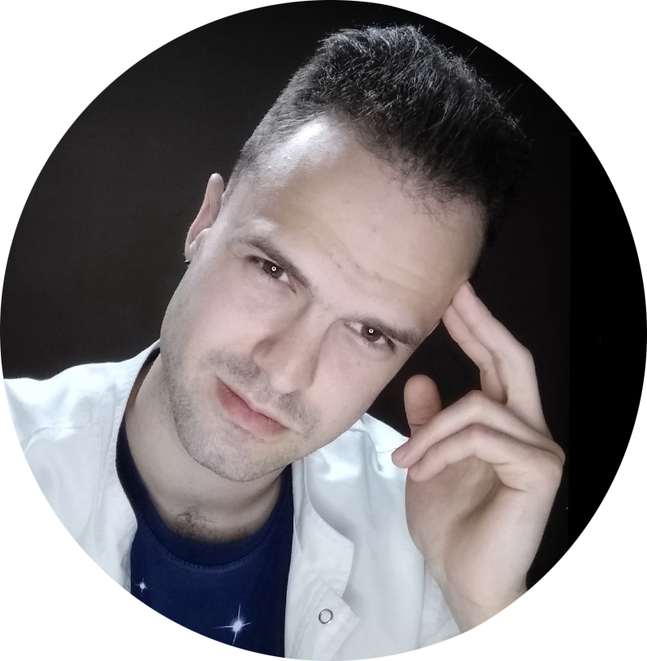

Привет!
Меня зовут Василий, и я делаю приборы и софт для медицины.
На этом сайте можно почитать, чем я занимаюсь, и ознакомиться со сделанными проектами в "шапке" страницы.
Учусь на 4 курсе МБФ СибГМУ по специальности "Медицинская биохимия"
Имею понимание схемотехники и электроники, все проекты проектировал и собирал сам
Имею небольшой опыт работы с МК (Arduino, STM32)
C++ (junior), Python (junior) (PyQT6, PyGame, Django, Flask), HTML + CSS (junior)